The Mosaic Network
We connect nuclear scientists at every career stage — students, postdocs, staff scientists, and faculty — through mentoring and community at the APS Division of Nuclear Physics meeting.
Formerly the Gender Minorities in Science Social (GeMSS).
See this year's event
Why a mosaic
In a mosaic, every piece keeps its own shape and color. Set side by side, they make a picture none of them could make alone. That's how we think about a scientific community.
Careers in nuclear physics are long, and the most useful advice often comes from someone a few steps further along. We create space for those conversations across every stage — and especially for people who don't always see themselves reflected in the room.
Where we come from
Since 2020, our events have given women and gender minorities in nuclear physics a place to network and find mentors. The Mosaic Network carries that work forward with a wider lens: mentorship that runs between early-, mid-, and late-career scientists.
Everyone attending the DNP meeting is welcome.
Mosaic Network at DNP 2026
Join us at the 2026 Fall Meeting of the APS Division of Nuclear Physics in Philadelphia. Add a sentence about the format — speed mentoring, panel, mixer, etc.
This event is supported by sponsors.
- When
- Date, time
- Where
- Philadelphia Marriott, room
- Format
- In person / hybrid
- Speakers
- Names
- RSVP
- Link to form
Organizing committee
- NamepronounsChair · Institution
- NamepronounsRole, Institution
- NamepronounsRole, Institution
- NamepronounsRole, Institution
Our history
-
2020
Women in Physics
A virtual event with over 100 attendees.
-
2021
Women* in Physics
A virtual event with over 100 attendees, each of whom received a swag box to make the event feel like a community. Speakers were Elizabeth Mae Scott, Alicia Palmisano, Julieta Gruszko, and Jaki Noronha-Hostler. Supported by MIT, CENTAUR, and senior members of the GeMSS community.
-
2022
GeMSS at DNP New Orleans
A hybrid event supported by the Dean of the College of Science at LSU, CENTAUR, and senior members of the GeMSS community.
-
2023–2025
Event names
Add highlights from these years, or delete this entry.
-
2026
GeMSS becomes the Mosaic Network
A new name and a wider focus on connecting scientists across career stages.